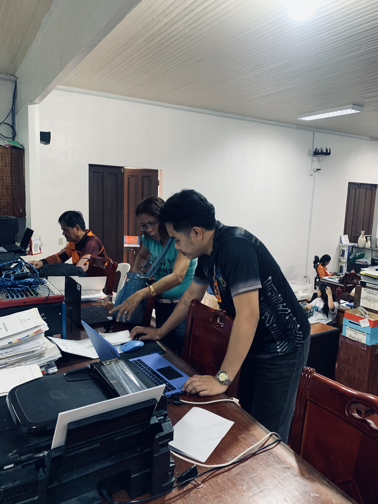
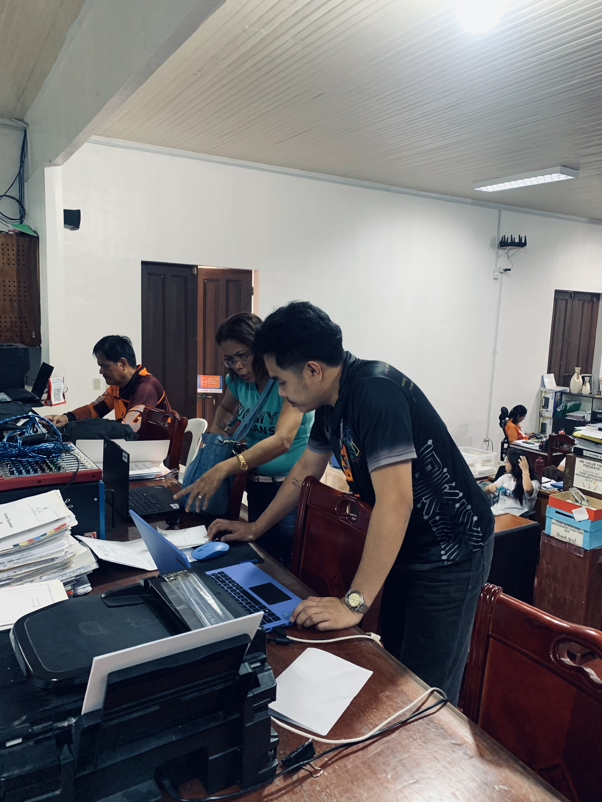

Week 1: First Impressions
September 8 - September 13
My first week as an intern at the DepEd Sorsogon City Division was both exciting and a little nerve-wracking. Initially, I felt awkward moving around since I didn’t know the staff yet, but they were very kind and welcoming. I had the opportunity to meet Sir Francis, the ICT head, and I immediately learned a lot from him.
One of the first tasks assigned to me by Sir Francis was to scan memos from higher offices and post them on the blog using WordPress. I also helped set up a Google Meet for those who couldn’t attend the meeting.
By the end of the week, I had a better understanding of my responsibilities as an intern and felt more comfortable working in the office. This experience gave me a real glimpse into the daily operations of a government office and motivated me to keep learning and contributing.
 
